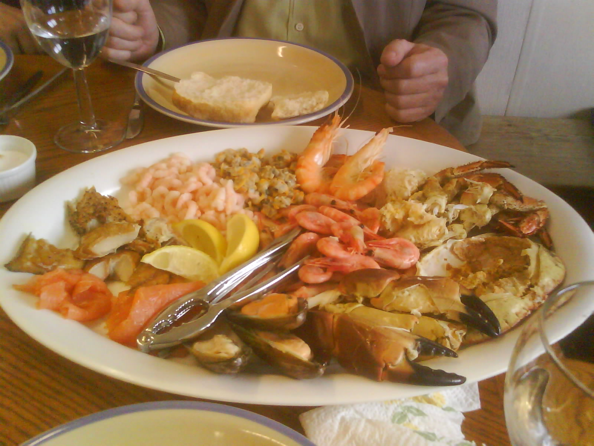

Taste · Downtown Wilmington
A good day starts
with something good.
Coffee and pastries, Latin-inspired flavors, and North Carolina seafood. Here are three downtown places to help you find your first table.

Coffee, bold flavors & the coast
Make room at the table.
A small starting list, rather than a ranking. Browse each venue's current menu to find your fit.
01 · Coffee & a pause
Bespoke
Start with coffee and pastries at this downtown café. Its menu also includes evening snacks and drinks, making it a useful stop at either end of your day.
202 Princess Street · Downtown
Pair it with: A wander through downtown before heading to the Riverwalk.
See Bespoke's menus & hours02 · Latin-inspired flavors
Savorez
For a different side of downtown dining, try a restaurant inspired by Latin flavors and colorful cooking. Browse the menu before you decide what to order.
402 Chestnut Street · Downtown
Get a feel for it: Read the restaurant's listing with Wilmington Downtown, Inc.
Read Savorez's dining details03 · A taste of the coast
Seabird
Seabird's seasonal approach puts North Carolina seafood and ingredients at the center of the menu. The restaurant occupies a historic building near the riverfront.
1 South Front Street · Downtown
Plan your evening: Check the latest dining hours and reservation options on the restaurant's website.
Explore Seabird & reservationsA little planning goes a long way.
Menus and opening hours change. Check the venue's website, ask about dietary needs, and confirm availability before setting out.
Save some time for a stroll.
Discover river views, garden paths and a nearby beach-town outing.